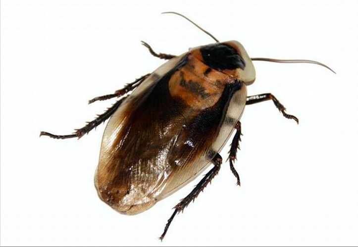
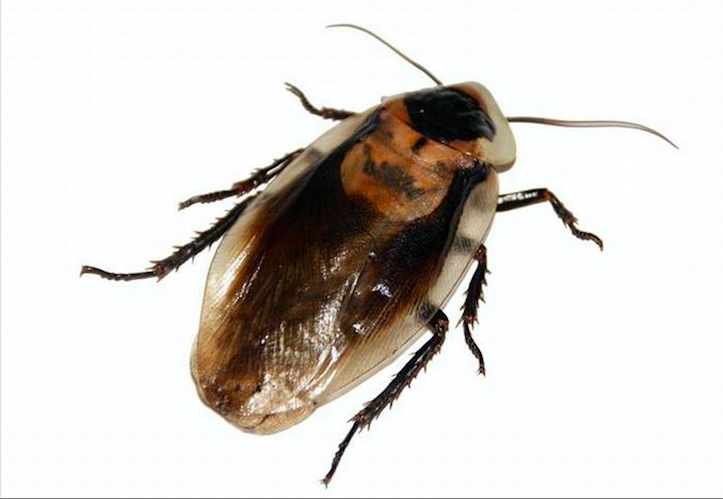

3 Nature Facts You Must Know
1. Alex, the African Grey Parrot
Is believed to be the first animal ever to ask an existential question. He wanted to know what color he was.
2. Fresh Snow
Fresh snow absorbs sound, lowering ambient noise. This is because air trapped between snowflakes weakens sound vibrations. That's why everything goes quiet when it snows.
3. Cockroaches
Cockroaches are repulsed by humans thatif they're touched by one, they run away and wash themselves thoroughly.
www.ba-bamail.com